Experience Madrilenian gastronomic culture among tapas, markets, jamón and vermouth with the best ranked free gastronomic tour in Madrid.
Start Your Culinary AdventureHi! My name is Giuseppe, and I'm an Italian tour guide and a huge foodie who decided to turn his love of food into a profession. After studying and graduating in England, I decided to embark on a new adventure in Madrid a few years ago, and today this amazing city is my home. Growing up in Italy, food has always been a fundamental part of life. Over time, I've expanded this passion by taking cooking and gastronomy courses, learning more about traditional recipes, local ingredients, and the stories behind each dish. I firmly believe that the best way to discover a city is through its food, culture, and people. As a guide, I love sharing Madrid's history, traditions, and incredible food culture with travelers from all over the world. My tours are relaxed, fun, and full of interesting stories, local tips, and, of course, excellent recommendations on where to eat like a true Madrileño. My goal is simple: for you to feel like you're discovering the city with a local friend. Good vibes, great stories… and maybe even a new friendship! See you soon in Madrid!
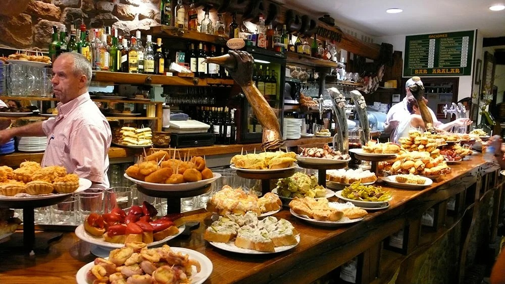
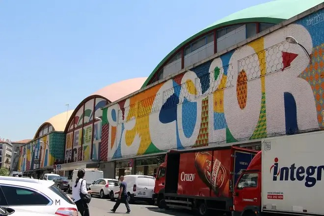
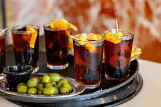
The tour consists of a true historical-gastronomic immersion into Spanish and Madrilenian culture through a visit to the famous and unique Spanish markets and the incredible TAPAS!
The aim of the tour is to explain the history and culture behind typical Spanish foods and take you to the best local spots to try each type of food, avoiding the classic mistake of eating at tourist spots like in other types of tours! The tour will start from Plaza Mayor, then head towards the San Miguel Market, La Cebada Market, San Fernando Market, and Antón Martín Market. During the journey, I will take you to the typical (secret :)) places I have discovered over these two years, and at each one, we will try what I consider to be the highlight of the place. Please, I will take you to many places, so to try everything, I recommend you take it slowly! During our unforgettable gastronomic tour, we will dive into the wonderful world of Vermouth! Get ready for a unique experience, where you can delight your palate with an extraordinary variety of types, from the spicy orange version to the refined barrel-aged version. But be careful, don't be too tempted! Haha. And to finish spectacularly, we will celebrate with the undisputed queen of Spanish desserts: her majesty, the Cheesecake!
At the end of this approximately 2-hour and 30-minute tour, you will be able to say that you have thoroughly explored the Iberian gastronomic culture. You will have learned to distinguish the differences that justify the different prices of Ham, you will be able to recognize a good tortilla, and you will discover what barnacles are and much more! Additionally, at the end of our tour, you will receive an automatic message with all my recommendations on the best restaurants and the most unmissable experiences to have here in Madrid, ensuring you an unforgettable vacation!
And don't worry about the language! Even if the chosen space does not match your language preference, I will be happy to offer you a double translation without complications. Don't let this aspect influence you: fun and experience are guaranteed, in any language we encounter!
In addition to showing you the best places to try traditional Spanish and Madrilenian food, I will give you valuable tips and secrets about the city. At the end of the tour, you will also receive an automatic message created by me with a list of the best places to try during your stay in Madrid: from the best paella to the most renowned cocktail bars, including traditional and non-traditional restaurants, and curious activities to do. All this to guarantee you a unique and authentic experience!
The sooner you do it, the more intense and rich your vacation here in Madrid will be! :)
Do you know why they are called tapas? Did you know that there are also many types of vermouth, including flavored and spicy ones? Did you know that in a monastery you can buy cookies made by cloistered nuns? Book with me to find out and let's have fun and feast together!
PS: This free tour is designed to introduce you to the history of Spanish gastronomy and the best places (in my experience) to try traditional tapas and therefore NO expenses are included. Everyone is free to consume whatever they want without any limit or obligation according to their own tastes and hunger ;) See you soon!
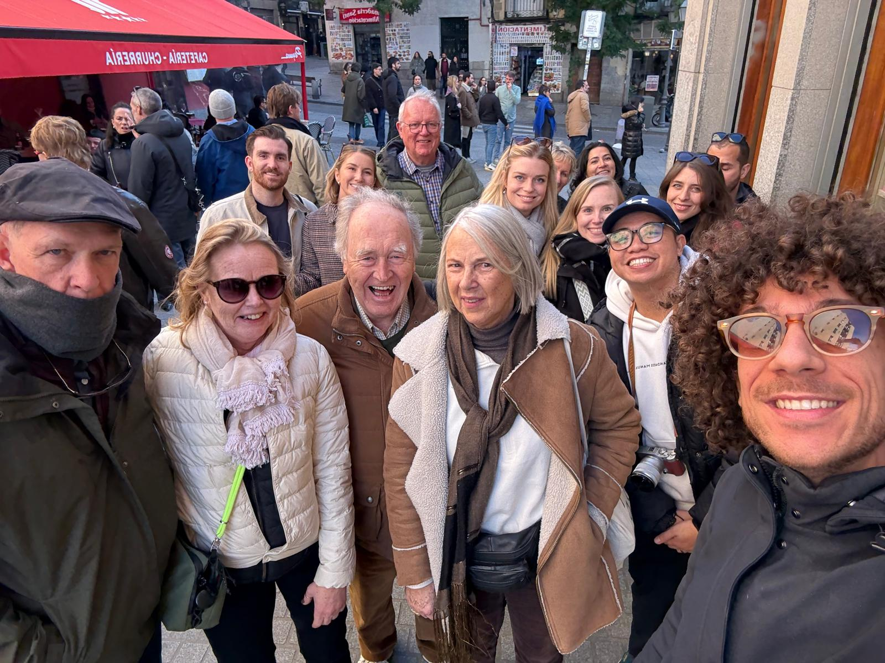
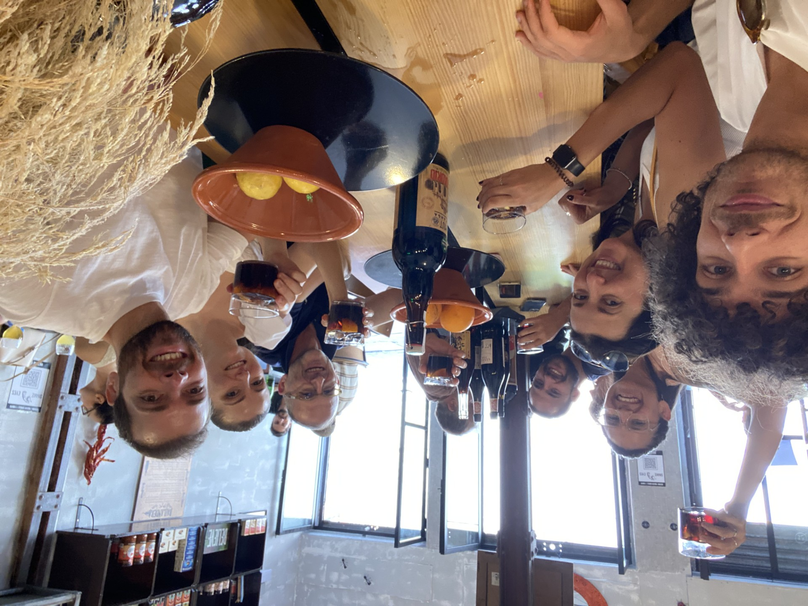
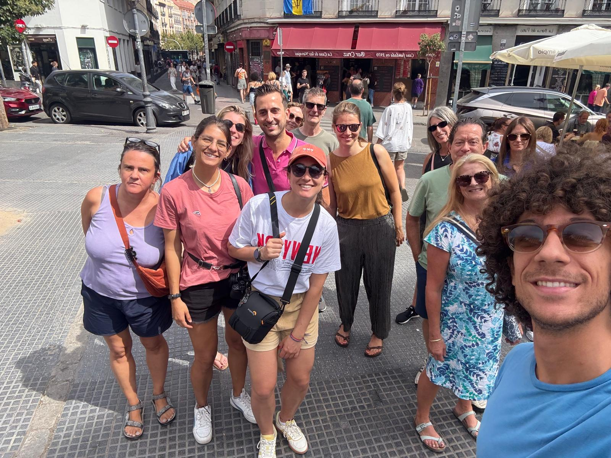
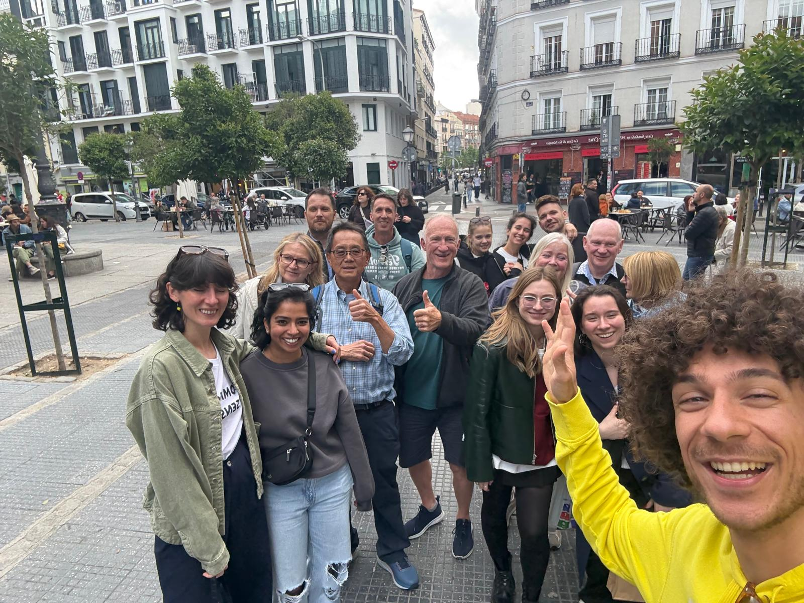
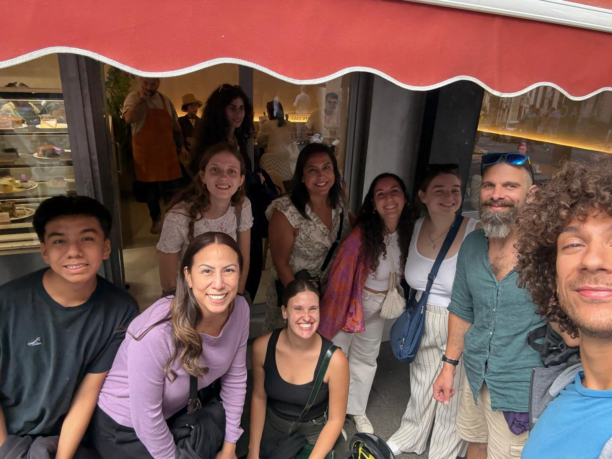
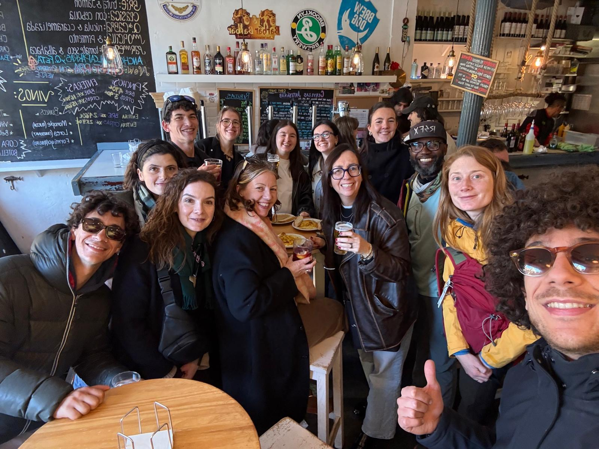
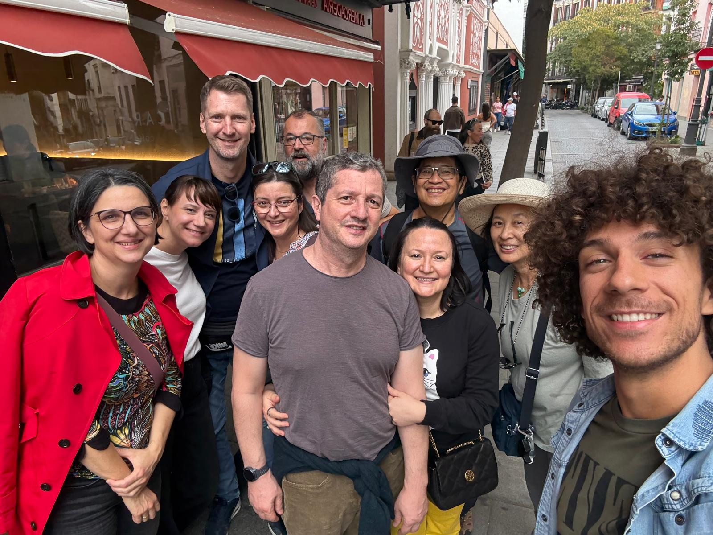
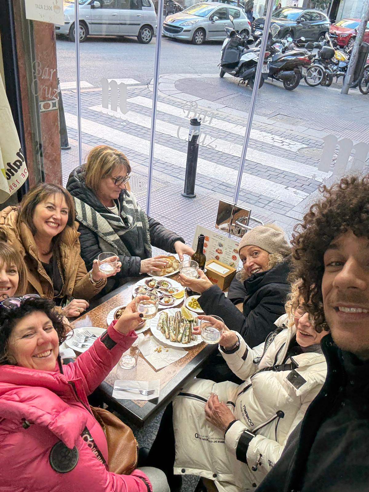
"Excellent tour! Giuseppe is very knowledgeable, friendly, and takes you to really authentic spots. The food and vermouth recommendations were spot on. Highly recommended for foodies!"
"Increíble esperienza. Giuseppe conosce Madrid a la perfección y te lleva a mercados y bares que nunca hubiéramos encontrado solos. Las storie sono fantástiche e la comida deliciosa. ¡Gracias, amigo!"
"Il miglior tour gastronomico che abbia mai fatto! Giuseppe ci ha fatto scoprire la vera essenza di Madrid. Vermouth e Cheesecake spaziali. Ci siamo sentiti come con un amico locale. Da non perdere!"
"Unforgettable afternoon. Learned so much about Spanish culture through its food. The secret places were amazing and Giuseppe is a top-notch guide. Good vibes guaranteed!"
Don't miss the opportunity to experience Madrid like a local friend. Choose your preferred date and time on the secure Guruwalk platform. Remember, spots fill up fast!
Book on Guruwalk